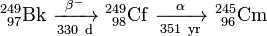
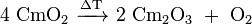
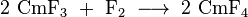

Curium
| General properties | |||||||||||||||||||||||||||||||||||||||||||||||||||||||||||||||||||||||||||||||||||||||||||||||||||||||||||||||||||||||||||||||||||||||||||||||||||||||||||||||||||||||||||||||||||||||||||||||||||||||||||||||||||||||||||||||||||||
|---|---|---|---|---|---|---|---|---|---|---|---|---|---|---|---|---|---|---|---|---|---|---|---|---|---|---|---|---|---|---|---|---|---|---|---|---|---|---|---|---|---|---|---|---|---|---|---|---|---|---|---|---|---|---|---|---|---|---|---|---|---|---|---|---|---|---|---|---|---|---|---|---|---|---|---|---|---|---|---|---|---|---|---|---|---|---|---|---|---|---|---|---|---|---|---|---|---|---|---|---|---|---|---|---|---|---|---|---|---|---|---|---|---|---|---|---|---|---|---|---|---|---|---|---|---|---|---|---|---|---|---|---|---|---|---|---|---|---|---|---|---|---|---|---|---|---|---|---|---|---|---|---|---|---|---|---|---|---|---|---|---|---|---|---|---|---|---|---|---|---|---|---|---|---|---|---|---|---|---|---|---|---|---|---|---|---|---|---|---|---|---|---|---|---|---|---|---|---|---|---|---|---|---|---|---|---|---|---|---|---|---|---|---|---|---|---|---|---|---|---|---|---|---|---|---|---|---|---|---|
| Name, symbol | curium, Cm | ||||||||||||||||||||||||||||||||||||||||||||||||||||||||||||||||||||||||||||||||||||||||||||||||||||||||||||||||||||||||||||||||||||||||||||||||||||||||||||||||||||||||||||||||||||||||||||||||||||||||||||||||||||||||||||||||||||
| Pronunciation | /ˈkjʊəriəm/ KEWR-ee-əm |
||||||||||||||||||||||||||||||||||||||||||||||||||||||||||||||||||||||||||||||||||||||||||||||||||||||||||||||||||||||||||||||||||||||||||||||||||||||||||||||||||||||||||||||||||||||||||||||||||||||||||||||||||||||||||||||||||||
| Appearance | silvery | ||||||||||||||||||||||||||||||||||||||||||||||||||||||||||||||||||||||||||||||||||||||||||||||||||||||||||||||||||||||||||||||||||||||||||||||||||||||||||||||||||||||||||||||||||||||||||||||||||||||||||||||||||||||||||||||||||||
| Curium in the periodic table | |||||||||||||||||||||||||||||||||||||||||||||||||||||||||||||||||||||||||||||||||||||||||||||||||||||||||||||||||||||||||||||||||||||||||||||||||||||||||||||||||||||||||||||||||||||||||||||||||||||||||||||||||||||||||||||||||||||
|
|||||||||||||||||||||||||||||||||||||||||||||||||||||||||||||||||||||||||||||||||||||||||||||||||||||||||||||||||||||||||||||||||||||||||||||||||||||||||||||||||||||||||||||||||||||||||||||||||||||||||||||||||||||||||||||||||||||
| Atomic number | 96 | ||||||||||||||||||||||||||||||||||||||||||||||||||||||||||||||||||||||||||||||||||||||||||||||||||||||||||||||||||||||||||||||||||||||||||||||||||||||||||||||||||||||||||||||||||||||||||||||||||||||||||||||||||||||||||||||||||||
| Standard atomic weight | (247) | ||||||||||||||||||||||||||||||||||||||||||||||||||||||||||||||||||||||||||||||||||||||||||||||||||||||||||||||||||||||||||||||||||||||||||||||||||||||||||||||||||||||||||||||||||||||||||||||||||||||||||||||||||||||||||||||||||||
| Element category | actinide | ||||||||||||||||||||||||||||||||||||||||||||||||||||||||||||||||||||||||||||||||||||||||||||||||||||||||||||||||||||||||||||||||||||||||||||||||||||||||||||||||||||||||||||||||||||||||||||||||||||||||||||||||||||||||||||||||||||
| Group, block | group n/a, f-block | ||||||||||||||||||||||||||||||||||||||||||||||||||||||||||||||||||||||||||||||||||||||||||||||||||||||||||||||||||||||||||||||||||||||||||||||||||||||||||||||||||||||||||||||||||||||||||||||||||||||||||||||||||||||||||||||||||||
| Period | period 7 | ||||||||||||||||||||||||||||||||||||||||||||||||||||||||||||||||||||||||||||||||||||||||||||||||||||||||||||||||||||||||||||||||||||||||||||||||||||||||||||||||||||||||||||||||||||||||||||||||||||||||||||||||||||||||||||||||||||
| Electron configuration | [Rn] 5f7 6d1 7s2 | ||||||||||||||||||||||||||||||||||||||||||||||||||||||||||||||||||||||||||||||||||||||||||||||||||||||||||||||||||||||||||||||||||||||||||||||||||||||||||||||||||||||||||||||||||||||||||||||||||||||||||||||||||||||||||||||||||||
| per shell | 2, 8, 18, 32, 25, 9, 2 | ||||||||||||||||||||||||||||||||||||||||||||||||||||||||||||||||||||||||||||||||||||||||||||||||||||||||||||||||||||||||||||||||||||||||||||||||||||||||||||||||||||||||||||||||||||||||||||||||||||||||||||||||||||||||||||||||||||
| Physical properties | |||||||||||||||||||||||||||||||||||||||||||||||||||||||||||||||||||||||||||||||||||||||||||||||||||||||||||||||||||||||||||||||||||||||||||||||||||||||||||||||||||||||||||||||||||||||||||||||||||||||||||||||||||||||||||||||||||||
| Phase | solid | ||||||||||||||||||||||||||||||||||||||||||||||||||||||||||||||||||||||||||||||||||||||||||||||||||||||||||||||||||||||||||||||||||||||||||||||||||||||||||||||||||||||||||||||||||||||||||||||||||||||||||||||||||||||||||||||||||||
| Melting point | 1613 K (1340 °C, 2444 °F) | ||||||||||||||||||||||||||||||||||||||||||||||||||||||||||||||||||||||||||||||||||||||||||||||||||||||||||||||||||||||||||||||||||||||||||||||||||||||||||||||||||||||||||||||||||||||||||||||||||||||||||||||||||||||||||||||||||||
| Boiling point | 3383 K (3110 °C, 5630 °F) | ||||||||||||||||||||||||||||||||||||||||||||||||||||||||||||||||||||||||||||||||||||||||||||||||||||||||||||||||||||||||||||||||||||||||||||||||||||||||||||||||||||||||||||||||||||||||||||||||||||||||||||||||||||||||||||||||||||
| Density near r.t. | 13.51 g·cm−3 | ||||||||||||||||||||||||||||||||||||||||||||||||||||||||||||||||||||||||||||||||||||||||||||||||||||||||||||||||||||||||||||||||||||||||||||||||||||||||||||||||||||||||||||||||||||||||||||||||||||||||||||||||||||||||||||||||||||
| Heat of fusion | 13.85 kJ·mol−1 | ||||||||||||||||||||||||||||||||||||||||||||||||||||||||||||||||||||||||||||||||||||||||||||||||||||||||||||||||||||||||||||||||||||||||||||||||||||||||||||||||||||||||||||||||||||||||||||||||||||||||||||||||||||||||||||||||||||
vapor pressure
|
|||||||||||||||||||||||||||||||||||||||||||||||||||||||||||||||||||||||||||||||||||||||||||||||||||||||||||||||||||||||||||||||||||||||||||||||||||||||||||||||||||||||||||||||||||||||||||||||||||||||||||||||||||||||||||||||||||||
| Atomic properties | |||||||||||||||||||||||||||||||||||||||||||||||||||||||||||||||||||||||||||||||||||||||||||||||||||||||||||||||||||||||||||||||||||||||||||||||||||||||||||||||||||||||||||||||||||||||||||||||||||||||||||||||||||||||||||||||||||||
| Oxidation states | 8,[1] 6,[2] 4, 3, 2 (an amphoteric oxide) | ||||||||||||||||||||||||||||||||||||||||||||||||||||||||||||||||||||||||||||||||||||||||||||||||||||||||||||||||||||||||||||||||||||||||||||||||||||||||||||||||||||||||||||||||||||||||||||||||||||||||||||||||||||||||||||||||||||
| Electronegativity | Pauling scale: 1.3 | ||||||||||||||||||||||||||||||||||||||||||||||||||||||||||||||||||||||||||||||||||||||||||||||||||||||||||||||||||||||||||||||||||||||||||||||||||||||||||||||||||||||||||||||||||||||||||||||||||||||||||||||||||||||||||||||||||||
| Ionization energies | 1st: 581 kJ·mol−1 | ||||||||||||||||||||||||||||||||||||||||||||||||||||||||||||||||||||||||||||||||||||||||||||||||||||||||||||||||||||||||||||||||||||||||||||||||||||||||||||||||||||||||||||||||||||||||||||||||||||||||||||||||||||||||||||||||||||
| Atomic radius | empirical: 174 pm | ||||||||||||||||||||||||||||||||||||||||||||||||||||||||||||||||||||||||||||||||||||||||||||||||||||||||||||||||||||||||||||||||||||||||||||||||||||||||||||||||||||||||||||||||||||||||||||||||||||||||||||||||||||||||||||||||||||
| Covalent radius | 169±3 pm | ||||||||||||||||||||||||||||||||||||||||||||||||||||||||||||||||||||||||||||||||||||||||||||||||||||||||||||||||||||||||||||||||||||||||||||||||||||||||||||||||||||||||||||||||||||||||||||||||||||||||||||||||||||||||||||||||||||
| Miscellanea | |||||||||||||||||||||||||||||||||||||||||||||||||||||||||||||||||||||||||||||||||||||||||||||||||||||||||||||||||||||||||||||||||||||||||||||||||||||||||||||||||||||||||||||||||||||||||||||||||||||||||||||||||||||||||||||||||||||
| Crystal structure | double hexagonal close-packed (dhcp)
 |
||||||||||||||||||||||||||||||||||||||||||||||||||||||||||||||||||||||||||||||||||||||||||||||||||||||||||||||||||||||||||||||||||||||||||||||||||||||||||||||||||||||||||||||||||||||||||||||||||||||||||||||||||||||||||||||||||||
| Electrical resistivity | 1.25 µΩ·m[3] | ||||||||||||||||||||||||||||||||||||||||||||||||||||||||||||||||||||||||||||||||||||||||||||||||||||||||||||||||||||||||||||||||||||||||||||||||||||||||||||||||||||||||||||||||||||||||||||||||||||||||||||||||||||||||||||||||||||
| Magnetic ordering | antiferromagnetic-paramagnetic transition at 52 K[3] | ||||||||||||||||||||||||||||||||||||||||||||||||||||||||||||||||||||||||||||||||||||||||||||||||||||||||||||||||||||||||||||||||||||||||||||||||||||||||||||||||||||||||||||||||||||||||||||||||||||||||||||||||||||||||||||||||||||
| CAS Registry Number | 7440-51-9 | ||||||||||||||||||||||||||||||||||||||||||||||||||||||||||||||||||||||||||||||||||||||||||||||||||||||||||||||||||||||||||||||||||||||||||||||||||||||||||||||||||||||||||||||||||||||||||||||||||||||||||||||||||||||||||||||||||||
| History | |||||||||||||||||||||||||||||||||||||||||||||||||||||||||||||||||||||||||||||||||||||||||||||||||||||||||||||||||||||||||||||||||||||||||||||||||||||||||||||||||||||||||||||||||||||||||||||||||||||||||||||||||||||||||||||||||||||
| Naming | named after Marie Skłodowska-Curie and Pierre Curie | ||||||||||||||||||||||||||||||||||||||||||||||||||||||||||||||||||||||||||||||||||||||||||||||||||||||||||||||||||||||||||||||||||||||||||||||||||||||||||||||||||||||||||||||||||||||||||||||||||||||||||||||||||||||||||||||||||||
| Discovery | Glenn T. Seaborg, Ralph A. James, Albert Ghiorso (1944) | ||||||||||||||||||||||||||||||||||||||||||||||||||||||||||||||||||||||||||||||||||||||||||||||||||||||||||||||||||||||||||||||||||||||||||||||||||||||||||||||||||||||||||||||||||||||||||||||||||||||||||||||||||||||||||||||||||||
| Most stable isotopes | |||||||||||||||||||||||||||||||||||||||||||||||||||||||||||||||||||||||||||||||||||||||||||||||||||||||||||||||||||||||||||||||||||||||||||||||||||||||||||||||||||||||||||||||||||||||||||||||||||||||||||||||||||||||||||||||||||||
|
|||||||||||||||||||||||||||||||||||||||||||||||||||||||||||||||||||||||||||||||||||||||||||||||||||||||||||||||||||||||||||||||||||||||||||||||||||||||||||||||||||||||||||||||||||||||||||||||||||||||||||||||||||||||||||||||||||||
Curium is a transuranic radioactive chemical element with symbol Cm and atomic number 96. This element of the actinide series was named after Marie and Pierre Curie – both were known for their research on radioactivity. Curium was first intentionally produced and identified in July 1944 by the group of Glenn T. Seaborg at the University of California, Berkeley. The discovery was kept secret and only released to the public in November 1945. Most curium is produced by bombarding uranium or plutonium with neutrons in nuclear reactors – one tonne of spent nuclear fuel contains about 20 grams of curium.
Curium is a hard, dense, silvery metal with a relatively high melting point and boiling point for an actinide. Whereas it is paramagnetic at ambient conditions, it becomes antiferromagnetic upon cooling, and other magnetic transitions are also observed for many curium compounds. In compounds, curium usually exhibits valence +3 and sometimes +4, and the +3 valence is predominant in solutions. Curium readily oxidizes, and its oxides are a dominant form of this element. It forms strongly fluorescent complexes with various organic compounds, but there is no evidence of its incorporation into bacteria and archaea. When introduced into the human body, curium accumulates in the bones, lungs and liver, where it promotes cancer.
All known isotopes of curium are radioactive and have a small critical mass for a sustained nuclear chain reaction. They predominantly emit α-particles, and the heat released in this process can potentially produce electricity in radioisotope thermoelectric generators. This application is hindered by the scarcity, high cost and radioactivity of curium isotopes. Curium is used in production of heavier actinides and of the 238Pu radionuclide for power sources in artificial pacemakers. It served as the α-source in the alpha particle X-ray spectrometers installed on the Sojourner, Mars, Mars 96, Athena, Spirit and Opportunity rovers as well as the Mars Science Laboratory to analyze the composition and structure of the rocks on the surface of Mars and the Moon. Such a spectrometer will also be used by the Philae lander of the Rosetta spacecraft to probe the surface of the 67P/Churyumov-Gerasimenko comet.[needs update]
Contents
[hide]History[edit]


Although curium had likely been produced in previous nuclear experiments, it was first intentionally synthesized, isolated and identified in 1944, at the University of California, Berkeley, by Glenn T. Seaborg, Ralph A. James, and Albert Ghiorso. In their experiments, they used a 60-inch (150 cm) cyclotron.[4]
Curium was chemically identified at the Metallurgical Laboratory (now Argonne National Laboratory) at the University of Chicago. It was the third transuranium element to be discovered even though it is the fourth in the series – the lighter element americium was unknown at the time.[5][6]
The sample was prepared as follows: first plutonium nitrate solution was coated on a platinum foil of about 0.5 cm2 area, the solution was evaporated and the residue was converted into plutonium(IV) oxide (PuO2) by annealing. Following cyclotron irradiation of the oxide, the coating was dissolved with nitric acid and then precipitated as the hydroxide using concentrated aqueous ammonia solution. The residue was dissolved in perchloric acid, and further separation was carried out by ion exchange to yield a certain isotope of curium. The separation of curium and americium was so painstaking that the Berkeley group initially called those elements pandemonium (from Greek for all demons or hell) and delirium (from Latin for madness).[7][8][9][10]
The curium-242 isotope was produced in July–August 1944 by bombarding 239Pu with α-particles to produce curium with the release of a neutron:
Curium-242 was unambiguously identified by the characteristic energy of the α-particles emitted during the decay:
The half-life of this alpha decay was first measured as 150 days and then corrected to 162.8 days.[11]
Another isotope 240Cm was produced in a similar reaction in March 1945:
The half-life of the 240Cm α-decay was correctly determined as 26.7 days.[11]
The discovery of curium, as well as americium, in 1944 was closely related to the Manhattan Project, the results were confidential and declassified only in 1945. Seaborg leaked the synthesis of the elements 95 and 96 on the U.S. radio show for children, the Quiz Kids, five days before the official presentation at an American Chemical Society meeting on November 11, 1945, when one of the listeners asked whether any new transuranium element beside plutonium and neptunium had been discovered during the war.[7] The discovery of curium (242Cm and 240Cm), their production and compounds were later patented listing only Seaborg as the inventor.[12]
The new element was named after Marie Skłodowska-Curie and her husband Pierre Curie who are noted for discovering radium and for their work in radioactivity. It followed the example of gadolinium, a lanthanide element above curium in the periodic table, which was named after the explorer of the rare earth elements Johan Gadolin:[13]
-
- "As the name for the element of atomic number 96 we should like to propose "curium", with symbol Cm. The evidence indicates that element 96 contains seven 5f electrons and is thus analogous to the element gadolinium with its seven 4f electrons in the regular rare earth series. On this base element 96 is named after the Curies in a manner analogous to the naming of gadolinium, in which the chemist Gadolin was honored."[5]
The first curium samples were barely visible, and were identified by their radioactivity. Louis Werner and Isadore Perlman created the first substantial sample of 30 µg curium-242 hydroxide at the University of California in 1947 by bombarding americium-241 with neutrons.[14][15][16] Macroscopic amounts of curium fluoride were obtained in 1950 by W. W. T. Crane, J. C. Wallmann and B. B. Cunningham. Its magnetic susceptibility was very close to that of GdF3 providing the first experimental evidence for the +3 valence of curium in its compounds.[14] Curium metal was produced only in 1951 by reduction of curium fluoride with barium.[17][18]
Characteristics[edit]
Physical[edit]

A synthetic, radioactive element, curium is a hard dense metal with silvery-white appearance and physical and chemical properties resembling those of gadolinium. Its melting point of 1340 °C is significantly higher than that of the previous transuranic elements neptunium (637 °C), plutonium (639 °C) and americium (1173 °C). In comparison, gadolinium melts at 1312 °C. The boiling point of curium is 3110 °C. With a density of 13.52 g/cm3, curium is significantly lighter than neptunium (20.45 g/cm3) and plutonium (19.8 g/cm3), but is heavier than most other metals. Between two crystalline forms of curium, the α-Cm is more stable at ambient conditions. It has a hexagonal symmetry, space group P63/mmc, lattice parameters a = 365 pm and c = 1182 pm, and four formula units per unit cell.[19] The crystal consists of a double-hexagonal close packing with the layer sequence ABAC and so is isotypic with α-lanthanum. At pressures above 23 GPa, at room temperature, α-Cm transforms into β-Cm, which has a face-centered cubic symmetry, space group Fm3m and the lattice constant a = 493 pm.[19] Upon further compression to 43 GPa, curium transforms to an orthorhombic γ-Cm structure similar to that of α-uranium, with no further transitions observed up to 52 GPa. These three curium phases are also referred to as Cm I, II and III.[20][21]
Curium has peculiar magnetic properties. Whereas its neighbor element americium shows no deviation from Curie-Weiss paramagnetism in the entire temperature range, α-Cm transforms to an antiferromagnetic state upon cooling to 65–52 K,[22][23] and β-Cm exhibits a ferrimagnetic transition at about 205 K. Meanwhile, curium pnictides show ferromagnetic transitions upon cooling: 244CmN and 244CmAs at 109 K, 248CmP at 73 K and 248CmSb at 162 K. Similarly, the lanthanide analogue of curium, gadolinium, as well as its pnictides also show magnetic transitions upon cooling, but the transition character is somewhat different: Gd and GdN become ferromagnetic, and GdP, GdAs and GdSb show antiferromagnetic ordering.[24]
In accordance with magnetic data, electrical resistivity of curium increases with temperature – about twice between 4 and 60 K – and then remains nearly constant up to room temperature. There is a significant increase in resistvity over time (about 10 µΩ·cm/h) due to self-damage of the crystal lattice by alpha radiation. This makes uncertain the absolute resistivity value for curium (about 125 µΩ·cm). The resistivity of curium is similar to that of gadolinium and of the actinides plutonium and neptunium, but is significantly higher than that of americium, uranium, polonium and thorium.[3][25]
Under ultraviolet illumination, curium(III) ions exhibit strong and stable yellow-orange fluorescence with a maximum in the range about 590–640 nm depending on their environment.[26] The fluorescence originates from the transitions from the first excited state 6D7/2 and the ground state 8S7/2. Analysis of this fluorescence allows monitoring interactions between Cm(III) ions in organic and inorganic complexes.[27]
Chemical[edit]
Curium ions in solution almost exclusively assume the oxidation state of +3, which is the most stable oxidation state for curium.[28] The +4 oxidation state is observed mainly in a few solid phases, such as CmO2 and CmF4.[29][30] Aqueous curium(IV) is only known in the presence of strong oxidizers such as potassium persulfate, and is easily reduced to curium(III) by radiolysis and even by water.[31] The chemical behavior of curium is different from the actinides thorium and uranium, and is similar to that of americium and many lanthanides. In aqueous solution, the Cm3+ ion is colorless to pale green,[32] and Cm4+ ion is pale yellow.[33] The optical absorption of Cm3+ ions contains three sharp peaks at 375.4, 381.2 and 396.5 nanometers and their strength can be directly converted into the concentration of the ions.[34] The +6 oxidation state has only been reported once in solution in 1978, as the curyl ion (CmO2+
2): this was prepared from the beta decay of americium-242 in the americium(V) ion 242
AmO+
2.[2] Failure to obtain Cm(VI) from oxidation of Cm(III) and Cm(IV) may be due to the high Cm4+/Cm3+ ionization potential and the instability of Cm(V).[31]
Curium ions are hard Lewis acids and thus form most stable complexes with hard bases.[35] The bonding is mostly ionic, with a small covalent component.[36] Curium in its complexes commonly exhibits a 9-fold coordination environment, within a tricapped trigonal prismatic geometry.[37]
Isotopes[edit]
| Thermal neutron cross sections (barns)[38] | ||||||
|---|---|---|---|---|---|---|
| 242Cm | 243Cm | 244Cm | 245Cm | 246Cm | 247Cm | |
| Fission | 5 | 617 | 1.04 | 2145 | 0.14 | 81.90 |
| Capture | 16 | 130 | 15.20 | 369 | 1.22 | 57 |
| C/F ratio | 3.20 | 0.21 | 14.62 | 0.17 | 8.71 | 0.70 |
| LEU spent fuel 20 years after 53 MWd/kg burnup[39] | ||||||
| 3 common isotopes | 51 | 3700 | 390 | |||
| Fast reactor MOX fuel (avg 5 samples, burnup 66-120GWd/t)[40] | ||||||
| Total curium 3.09×10−3% | 27.64% | 70.16% | 2.166% | 0.0376% | 0.000928% | |
| Isotope | 242Cm | 243Cm | 244Cm | 245Cm | 246Cm | 247Cm | 248Cm | 250Cm |
| Critical mass, kg | 25 | 7.5 | 33 | 6.8 | 39 | 7 | 40.4 | 23.5 |
About 20 radioisotopes and 7 nuclear isomers between 233Cm and 252Cm are known for curium, and no stable isotopes. The longest half-lives have been reported for 247Cm (15.6 million years) and 248Cm (348,000 years). Other long-lived isotopes are 245Cm (half-life 8500 years), 250Cm (8,300 years) and 246Cm (4,760 years). Curium-250 is unusual in that it predominantly (about 86%) decays via spontaneous fission. The most commonly used curium isotopes are 242Cm and 244Cm with the half-lives of 162.8 days and 18.1 years, respectively.[11]
Fission percentage is 100 minus shown percentages.
Total rate of transmutation varies greatly by nuclide.
245Cm–248Cm are long-lived with negligible decay.
All isotopes between 242Cm and 248Cm, as well as 250Cm, undergo a self-sustaining nuclear chain reaction and thus in principle can act as a nuclear fuel in a reactor. As in most transuranic elements, the nuclear fission cross section is especially high for the odd-mass curium isotopes243Cm, 245Cm and 247Cm. These can be used in thermal-neutron reactors, whereas a mixture of curium isotopes is only suitable for fast breeder reactors since the even-mass isotopes are not fissile in a thermal reactor and accumulate as burn-up increases.[42] The mixed-oxide (MOX) fuel, which is to be used in power reactors, should contain little or no curium because the neutron activation of 248Cm will create californium. This is strong neutron emitter, and would pollute the back end of the fuel cycle and increase the dose to reactor personnel. Hence, if the minor actinides are to be used as fuel in a thermal neutron reactor, the curium should be excluded from the fuel or placed in special fuel rods where it is the only actinide present.[43]
The table to the right lists the critical masses for curium isotopes for a sphere, without a moderator and reflector. With a metal reflector (30 cm of steel), the critical masses of the odd isotopes are about 3–4 kg. When using water (thickness ~20–30 cm) as the reflector, the critical mass can be as small as 59 gram for 245Cm, 155 gram for 243Cm and 1550 gram for 247Cm. There is a significant uncertainty in these critical mass values. Whereas it is usually of the order 20%, the values for 242Cm and 246Cm were listed as large as 371 kg and 70.1 kg, respectively, by some research groups.[42][44]
Currently, curium is not used as a nuclear fuel owing to its low availability and high price.[45] 245Cm and 247Cm have a very small critical mass and therefore could be used in portable nuclear weapons, but none have been reported thus far. Curium-243 is not suitable for this purpose because of its short half-life and strong α emission which would result in excessive heat.[46] Curium-247 would be highly suitable, having a half-life 647 times that of plutonium-239.
Occurrence[edit]

The longest-lived isotope of curium, 247Cm, has a half-life of 15.6 million years. Therefore, any primordial curium, that is curium present on the Earth during its formation, should have decayed by now. Curium is produced artificially, in small quantities for research purposes. Furthermore, it occurs in spent nuclear fuel. Curium is present in nature in certain areas used for the atmospheric nuclear weapons tests, which were conducted between 1945 and 1980.[47] So the analysis of the debris at the testing site of the first U.S. hydrogen bomb, Ivy Mike, (1 November 1952, Enewetak Atoll), beside einsteinium, fermium, plutonium and americium also revealed isotopes of berkelium, californium and curium, in particular 245Cm, 246Cm and smaller quantities of 247Cm, 248Cm and 249Cm. For reasons of military secrecy, this result was published only in 1956.[48]
Atmospheric curium compounds are poorly soluble in common solvents and mostly adhere to soil particles. Soil analysis revealed about 4,000 times higher concentration of curium at the sandy soil particles than in water present in the soil pores. An even higher ratio of about 18,000 was measured in loam soils.[49]
A few atoms of curium can be produced by neutron capture reactions and beta decay in very highly concentrated uranium-bearing deposits.[50]
Synthesis[edit]
Isotope preparation[edit]
Curium is produced in small quantities in nuclear reactors, and by now only kilograms of it have been accumulated for the 242Cm and 244Cm and grams or even milligrams for heavier isotopes. This explains the high price of curium, which has been be quoted at 160–185 USD per milligram,[14] with a more recent estimate at 2,000 USD/g for 242Cm and 170 USD/g for 244Cm.[51] In nuclear reactors, curium is formed from 238U in a series of nuclear reactions. In the first chain, 238U captures a neutron and converts into 239U, which via β− decay transforms into 239Np and 239Pu.
![\mathrm{^{238}_{\ 92}U\ \xrightarrow {(n,\gamma)} \ ^{239}_{\ 92}U\ \xrightarrow [23.5 \ min]{\beta^-} \ ^{239}_{\ 93}Np\ \xrightarrow [2.3565 \ d]{\beta^-} \ ^{239}_{\ 94}Pu}](./curium_files/fb102fc764966c6247fe903665840879.png) (the times are half-lives).
(the times are half-lives).
Further neutron capture followed by β−-decay produces the 241Am isotope of americium which further converts into 242Cm:
- .
For research purposes, curium is obtained by irradiating not uranium but plutonium, which is available in large amounts from spent nuclear fuel. Much higher neutron flux is used for the irradiation that results in a different reaction chain and formation of 244Cm:[6]
![\mathrm{^{239}_{\ 94}Pu\ \xrightarrow {4(n,\gamma)} \ ^{243}_{\ 94}Pu\ \xrightarrow [4,956 \ h]{\beta^-} \ ^{243}_{\ 95}Am\ \xrightarrow {(n,\gamma)} \ ^{244}_{\ 95}Am\ \xrightarrow [10.1 \ h]{\beta^-} \ ^{244}_{\ 96}Cm}](./curium_files/d34b435a0524ce75ec626124a157c538.png)
{kind=link}
.png){kind=link}
{kind=link}
{kind=link}
{kind=link}
Curium-244 decays into 240Pu by emission of alpha particle, but it also absorbs neutrons resulting in a small amount of heavier curium isotopes. Among those, 247Cm and 248Cm are popular in scientific research because of their long half-lives. However, the production rate of 247Cm in thermal neutron reactors is relatively low because of it is prone to undergo fission induced by thermal neutrons.[52] Synthesis of 250Cm via neutron absorption is also rather unlikely because of the short half-life of the intermediate product 249Cm (64 min), which converts by β− decay to the berkelium isotope 249Bk.[52]
- (for A = 244–248)
The above cascade of (n,γ) reactions produces a mixture of different curium isotopes. Their post-synthesis separation is cumbersome, and therefore a selective synthesis is desired. Curium-248 is favored for research purposes because of its long half-life. The most efficient preparation method of this isotope is via α-decay of the californium isotope 252Cf, which is available in relatively large quantities due to its long half-life (2.65 years). About 35–50 mg of 248Cm is being produced by this method every year. The associated reaction produces 248Cm with isotopic purity of 97%.[52]
Another interesting for research isotope 245Cm can be obtained from the α-decay of 249Cf, and the latter isotope is produced in minute quantities from the β−-decay of the berkelium isotope 249Bk.
- 
Metal preparation[edit]

Most synthesis routines yield a mixture of different actinide isotopes as oxides, from which a certain isotope of curium needs to be separated. An example procedure could be to dissolve spent reactor fuel (e.g. MOX fuel) in nitric acid, and remove the bulk of the uranium and plutonium using a PUREX (Plutonium – URanium EXtraction) type extraction with tributyl phosphate in a hydrocarbon. The lanthanides and the remaining actinides are then separated from the aqueous residue (raffinate) by a diamide-based extraction to give, after stripping, a mixture of trivalent actinides and lanthanides. A curium compound is then selectively extracted using multi-step chromatographic and centrifugation techniques with an appropriate reagent.[53] Bis-triazinyl bipyridine complex has been recently proposed as such reagent which is highly selective to curium.[54] Separation of curium from a very similar americium can also be achieved by treating a slurry of their hydroxides in aqueous sodium bicarbonate with ozone at elevated temperature. Both americium and curium are present in solutions mostly in the +3 valence state; whereas americium oxidizes to soluble Am(IV) complexes, curium remains unchanged and can thus be isolated by repeated centrifugation.[55]
Metallic curium is obtained by reduction of its compounds. Initially, curium(III) fluoride was used for this purpose. The reaction was conducted in the environment free from water and oxygen, in the apparatus made of tantalum and tungsten, using elemental barium or lithium as reducing agents.[6][17][56][57][58]
Another possibility is the reduction of curium(IV) oxide using a magnesium-zinc alloy in a melt of magnesium chloride and magnesium fluoride.[59]
Compounds and reactions[edit]
Oxides[edit]
Curium readily reacts with oxygen forming mostly Cm2O3 and CmO2 oxides,[47] but the divalent oxide CmO is also known.[60] Black CmO2 can be obtained by burning curium oxalate (Cm2(C2O4)3), nitrate (Cm(NO3)3) or hydroxide in pure oxygen.[30][61] Upon heating to 600–650 °C in vacuum (about 0.01 Pa), it transforms into the whitish Cm2O3:[30][62]
- .
Alternatively, Cm2O3 can be obtained by reducing CmO2 with molecular hydrogen:[63]
Furthermore, a number of ternary oxides of the type M(II)CmO3 are known, where M stands for a divalent metal, such as barium.[64]
Thermal oxidation of trace quantities of curium hydride (CmH2–3) has been reported to produce a volatile form of CmO2 and the volatile trioxide CmO3, one of the two known examples of the very rare +6 state for curium.[2] Another observed species was reported to behave similarly to plutonium tetroxide and was tentatively characterized as CmO4, with curium in the extremely rare +8 state only known in this compound.[1]
Halides[edit]
The colorless curium(III) fluoride (CmF3) can be produced by introducing fluoride ions into curium(III)-containing solutions. The brown tetravalent curium(IV) fluoride (CmF4) on the other hand is only obtained by reacting curium(III) fluoride with molecular fluorine:[6]
- 
A series of ternary fluorides are known of the form A7Cm6F31, where A stands for alkali metal.[65]
The colorless curium(III) chloride (CmCl3) is produced in the reaction of curium(III) hydroxide (Cm(OH)3) with anhydrous hydrogen chloride gas. It can further be converted into other halides, such as curium(III) bromide (colorless to light green) and curium(III) iodide (colorless), by reacting it with the ammonia salt of the corresponding halide at elevated temperature of about 400–450 °C:[66]
An alternative procedure is heating curium oxide to about 600 °C with the corresponding acid (such as hydrobromic for curium bromide).[67][68] Vapor phase hydrolysis of curium(III) chloride results in curium oxychloride:[69]
Chalcogenides and pnictides[edit]
Sulfides, selenides and tellurides of curium have been obtained by treating curium with gaseous sulfur, selenium or tellurium in vacuum at elevated temperature.[70][71] The pnictides of curium of the type CmX are known for the elements nitrogen, phosphorus, arsenic and antimony.[6] They can be prepared by reacting either curium(III) hydride (CmH3) or metallic curium with these elements at elevated temperatures.[72]
Organocurium compounds and biological aspects[edit]
{kind=link}
Organometallic complexes analogous to uranocene are known also for other actinides, such as thorium, protactinium, neptunium, plutonium and americium. Molecular orbital theory predicts a stable "curocene" complex (η8-C8H8)2Cm, but it has not been reported experimentally yet.[73][74]
Formation of the complexes of the type Cm(n-C3H7-BTP)3, where BTP stands for 2,6-di(1,2,4-triazin-3-yl)pyridine, in solutions containing n-C3H7-BTP and Cm3+ ions has been confirmed by EXAFS. Some of these BTP-type complexes selectively interact with curium and therefore are useful in its selective separation from lanthanides and another actinides.[26][75] Dissolved Cm3+ ions bind with many organic compounds, such as hydroxamic acid,[76] urea,[77] fluorescein[78] and adenosine triphosphate.[79] Many of these compounds are related to biological activity of various microorganisms. The resulting complexes exhibit strong yellow-orange emission under UV light excitation, which is convenient not only for their detection, but also for studying the interactions between the Cm3+ ion and the ligands via changes in the half-life (of the order ~0.1 ms) and spectrum of the fluorescence.[27][76][77][78][79]
Curium has no biological significance.[80] There are a few reports on biosorption of Cm3+ by bacteria and archaea, however no evidence for incorporation of curium into them.[81][82]
Applications[edit]
Radionuclides[edit]
{kind=link}
Curium is one of the most radioactive isolable elements. Its two most common isotopes 242Cm and 244Cm are strong alpha emitters (energy 6 MeV); they have relatively short half-lives of 162.8 days and 18.1 years, and produce as much as 120 W/g and 3 W/g of thermal energy, respectively.[14][83][84] Therefore, curium can be used in its common oxide form in radioisotope thermoelectric generators like those in spacecraft. This application has been studied for the 244Cm isotope, while 242Cm was abandoned due to its prohibitive price of around 2000 USD/g. Curium-243 with a ~30 year half-life and good energy yield of ~1.6 W/g could make for a suitable fuel, but it produces significant amounts of harmful gamma and beta radiation from radioactive decay products. Though as an α-emitter, 244Cm requires a much thinner radiation protection shielding, it has a high spontaneous fission rate, and thus the neutron and gamma radiation rate are relatively strong. As compared to a competing thermoelectric generator isotope such as 238Pu, 244Cm emits a 500 time greater fluence of neutrons, and its higher gamma emission requires a shield that is 20 times thicker — about 2 inches of lead for a 1 kW source, as compared to 0.1 in for 238Pu. Therefore this application of curium is currently considered impractical.[51]
A more promising application of 242Cm is to produce 238Pu, a more suitable radioisotope for thermoelectric generators such as in cardiac pacemakers. The alternative routes to 238Pu use the (n,γ) reaction of 237Np, or the deuteron bombardment of uranium, which both always produce 236Pu as an undesired by-product — since the latter decays to 208Tl with strong gamma emission.[85]
Curium is also a common starting material for the production of higher transuranic elements and transactinides. Thus, bombardment of 248Cm with oxygen (18O) or magnesium (26Mg) yielded certain isotopes of seaborgium (265Sg) and hassium (269Hs and 270Hs).[86] Californium was discovered when a microgram-sized target of curium-242 was irradiated with 35 MeV alpha particles using the 60-inch (150 cm) cyclotron at Berkeley:
- 242
96Cm + 4
2He → 245
98Cf + 1
0n
Only about 5,000 atoms of californium were produced in this experiment.[87]
{kind=link}
X-ray spectrometer[edit]
The most practical application of 244Cm — though rather limited in total volume — is as α-particle source in the alpha particle X-ray spectrometers (APXS). These instruments were installed on the Sojourner, Mars, Mars 96, Mars Exploration Rovers and Philae comet lander,[88] as well as the Mars Science Laboratory to analyze the composition and structure of the rocks on the surface of planet Mars.[89] APXS was also used in the Surveyor 5–7 moon probes but with a 242Cm source.[49][90][91]
An elaborated APXS setup is equipped with a sensor head containing six curium sources having the total radioactive decay rate of several tens of millicuries (roughly a gigabecquerel). The sources are collimated on the sample, and the energy spectra of the alpha particles and protons scattered from the sample are analyzed (the proton analysis is implemented only in some spectrometers). These spectra contain quantitative information on all major elements in the samples except for hydrogen, helium and lithium.[92]
Safety[edit]
Owing to its high radioactivity, curium and its compounds must be handled in appropriate laboratories under special arrangements. Whereas curium itself mostly emits α-particles which are absorbed by thin layers of common materials, some of its decay products emit significant fractions of beta and gamma radiation, which require a more elaborate protection.[47] If consumed, curium is excreted within a few days and only 0.05% is absorbed in the blood. From there, about 45% goes to the liver, 45% to the bones, and the remaining 10% is excreted. In the bone, curium accumulates on the inside of the interfaces to the bone marrow and does not significantly redistribute with time; its radiation destroys bone marrow and thus stops red blood cell creation. The biological half-life of curium is about 20 years in the liver and 50 years in the bones.[47][49] Curium is absorbed in the body much more strongly via inhalation, and the allowed total dose of 244Cm in soluble form is 0.3 μC.[14] Intravenous injection of 242Cm and 244Cm containing solutions to rats increased the incidence of bone tumor, and inhalation promoted pulmonary and liver cancer.[47]
Curium isotopes are inevitably present in spent nuclear fuel with a concentration of about 20 g/tonne.[93] Among them, the 245Cm–248Cm isotopes have decay times of thousands of years and need to be removed to neutralize the fuel for disposal.[94] The associated procedure involves several steps, where curium is first separated and then converted by neutron bombardment in special reactors to short-lived nuclides. This procedure, nuclear transmutation, while well documented for other elements, is still being developed for curium.[26]
References[edit]
- ^ Jump up to: a b Domanov, V. P. (January 2013). "Possibility of generation of octavalent curium in the gas phase in the form of volatile tetraoxide CmO4". Radiochemistry (SP MAIK Nauka/Interperiodica) 55 (1): 46–51. doi:10.1134/S1066362213010098.
- ^ Jump up to: a b c Domanov, V. P.; Lobanov, Yu. V. (October 2011). "Formation of volatile curium(VI) trioxide CmO3". Radiochemistry (SP MAIK Nauka/Interperiodica) 53 (5): 453–6. doi:10.1134/S1066362211050018.
- ^ Jump up to: a b c Schenkel, R (1977). "The electrical resistivity of 244Cm metal". Solid State Communications 23 (6): 389. Bibcode:1977SSCom..23..389S. doi:10.1016/0038-1098(77)90239-3.
- Jump up ^ Hall, Nina (2000). The New Chemistry: A Showcase for Modern Chemistry and Its Applications. Cambridge University Press. pp. 8–9. ISBN 978-0-521-45224-3.
- ^ Jump up to: a b Seaborg, G. T.; James, R. A. and Ghiorso, A.: "The New Element Curium (Atomic Number 96)", NNES PPR (National Nuclear Energy Series, Plutonium Project Record), Vol. 14 B, The Transuranium Elements: Research Papers, Paper No. 22.2, McGraw-Hill Book Co., Inc., New York, 1949; Abstract; Full text (January 1948).
- ^ Jump up to: a b c d e Morss, L. R.; Edelstein, N. M. and Fugere, J. (eds): The Chemistry of the Actinide Elements and transactinides, volume 3, Springer-Verlag, Dordrecht 2006, ISBN 1-4020-3555-1.
- ^ Jump up to: a b Pepling, Rachel Sheremeta (2003). "Chemical & Engineering News: It's Elemental: The Periodic Table – Americium". Retrieved 2008-12-07.
- Jump up ^ Krebs, Robert E. The history and use of our earth's chemical elements: a reference guide, Greenwood Publishing Group, 2006, ISBN 0-313-33438-2 p. 322
- Jump up ^ Harper, Douglas. "pandemonium". Online Etymology Dictionary.
- Jump up ^ Harper, Douglas. "delirium". Online Etymology Dictionary.
- ^ Jump up to: a b c Audi, G; Bersillon, O.; Blachot, J.; Wapstra, A.H. (1997). "The N? evaluation of nuclear and decay properties" (PDF). Nuclear Physics A 624 (1): 1. Bibcode:1997NuPhA.624....1A. doi:10.1016/S0375-9474(97)00482-X.
- Jump up ^ Seaborg, G. T. U.S. Patent 3,161,462 "Element", Filing date: 7 February 1949, Issue date: December 1964
- Jump up ^ Greenwood, p. 1252
- ^ Jump up to: a b c d e Hammond C. R. "The elements" in Lide, D. R., ed. (2005). CRC Handbook of Chemistry and Physics (86th ed.). Boca Raton (FL): CRC Press. ISBN 0-8493-0486-5.
- Jump up ^ L. B. Werner, I. Perlman: "Isolation of Curium", NNES PPR (National Nuclear Energy Series, Plutonium Project Record), Vol. 14 B, The Transuranium Elements: Research Papers, Paper No. 22.5, McGraw-Hill Book Co., Inc., New York, 1949.
- Jump up ^ "National Academy of Sciences. Isadore Perlman 1915–1991". Nap.edu. Retrieved 2011-03-25.
- ^ Jump up to: a b Wallmann, J. C.; Crane, W. W. T.; Cunningham, B. B. (1951). "The Preparation and Some Properties of Curium Metal". Journal of the American Chemical Society 73 (1): 493–494. doi:10.1021/ja01145a537.
- Jump up ^ Werner, L. B.; Perlman, I. (1951). "First Isolation of Curium". Journal of the American Chemical Society 73 (1): 5215–5217. doi:10.1021/ja01155a063.
- ^ Jump up to: a b Milman, V; Winkler, B; Pickard, C.J (2003). "Crystal structures of curium compounds: an ab initio study". Journal of Nuclear Materials 322 (2–3): 165. Bibcode:2003JNuM..322..165M. doi:10.1016/S0022-3115(03)00321-0.
- Jump up ^ Young, D. A. Phase diagrams of the elements, University of California Press, 1991, ISBN 0-520-07483-1, p. 227
- Jump up ^ Haire, R; Peterson, J; Benedict, U; Dufour, C; Itie, J (1985). "X-ray diffraction of curium-248 metal under pressures of up to 52 GPa". Journal of the Less Common Metals 109 (1): 71. doi:10.1016/0022-5088(85)90108-0.
- Jump up ^ Kanellakopulos, B; Blaise, A.; Fournier, J.M.; Müller, W. (1975). "The magnetic susceptibility of Americium and curium metal". Solid State Communications 17 (6): 713. Bibcode:1975SSCom..17..713K. doi:10.1016/0038-1098(75)90392-0.
- Jump up ^ Fournier, J; Blaise, A.; Muller, W.; Spirlet, J.-C. (1977). "Curium: A new magnetic element". Physica B+C. 86–88: 30. Bibcode:1977PhyBC..86...30F. doi:10.1016/0378-4363(77)90214-5.
- Jump up ^ Nave, S. E.; Huray, P. G.; Peterson, J. R. and Damien, D. A. Magnetic susceptibility of curium pnictides, Oak Ridge National Laboratory
- Jump up ^ Schenkel, R (1977). "The electrical resistivity of 244Cm metal". Solid State Communications 23 (6): 389. Bibcode:1977SSCom..23..389S. doi:10.1016/0038-1098(77)90239-3.
- ^ Jump up to: a b c Denecke, Melissa A.; Rossberg, André; Panak, Petra J.; Weigl, Michael; Schimmelpfennig, Bernd; Geist, Andreas (2005). "Characterization and Comparison of Cm(III) and Eu(III) Complexed with 2,6-Di(5,6-dipropyl-1,2,4-triazin-3-yl)pyridine Using EXAFS, TRFLS, and Quantum-Chemical Methods". Inorganic Chemistry 44 (23): 8418–25. doi:10.1021/ic0511726. PMID 16270980.
- ^ Jump up to: a b Bünzli, J.-C. G. and Choppin, G. R. Lanthanide probes in life, chemical, and earth sciences: theory and practice, Elsevier, Amsterdam, 1989 ISBN 0-444-88199-9
- Jump up ^ Penneman, p. 24
- Jump up ^ Keenan, Thomas K. (1961). "FIRST OBSERVATION OF AQUEOUS TETRAVALENT CURIUM". Journal of the American Chemical Society 83 (17): 3719. doi:10.1021/ja01478a039.
- ^ Jump up to: a b c Asprey, L. B.; Ellinger, F. H.; Fried, S.; Zachariasen, W. H. (1955). "EVIDENCE FOR QUADRIVALENT CURIUM: X-RAY DATA ON CURIUM OXIDES". Journal of the American Chemical Society 77 (6): 1707. doi:10.1021/ja01611a108.
- ^ Jump up to: a b Gregg J., Lumetta; Thompson, Major C.; Penneman, Robert A.; Eller, P. Gary (2006). "Curium". In Morss, Lester R.; Edelstein, Norman M.; Fuger, Jean. The Chemistry of the Actinide and Transactinide Elements (PDF) 3 (3rd ed.). Dordrecht, the Netherlands: Springer. pp. 1397–1443. doi:10.1007/1-4020-3598-5_9.
- Jump up ^ Greenwood, p. 1265
- Jump up ^ Holleman, p. 1956
- Jump up ^ Penneman, pp. 25–26
- Jump up ^ Jensen, Mark P.; Bond, Andrew H. (2002). "Comparison of Covalency in the Complexes of Trivalent Actinide and Lanthanide Cations". Journal of the American Chemical Society 124 (33): 9870–7. doi:10.1021/ja0178620. PMID 12175247.
- Jump up ^ Seaborg, G. T. (1993). "Overview of the Actinide and Lanthanide (the f) Elements". Radiochimica Acta 61: 115–122.
- Jump up ^ Greenwood, p. 1267
- Jump up ^ Pfennig, G.; Klewe-Nebenius, H. and Seelmann Eggebert, W. (Eds.): Karlsruhe nuclide, 6th Ed. 1998
- Jump up ^ Kang, Jungmin; Von Hippel, Frank (2005). "Limited Proliferation-Resistance Benefits from Recycling Unseparated Transuranics and Lanthanides from Light-Water Reactor Spent Fuel" (PDF). Science and Global Security 13 (3): 169. doi:10.1080/08929880500357682.
- Jump up ^ Osaka, M. et al. (2001). "Analysis of Curium Isotopes in Mixed Oxide Fuel Irradiated in Fast Reactor" (PDF). Journal of Nuclear Science and Technology 38 (10): 912–914. doi:10.3327/jnst.38.912.
- Jump up ^ Sasahara, Akihiro; Matsumura, Tetsuo; Nicolaou, Giorgos; Papaioannou, Dimitri (2004). "Neutron and Gamma Ray Source Evaluation of LWR High Burn-up UO2 and MOX Spent Fuels" (PDF). Journal of Nuclear Science and Technology 41 (4): 448–456. doi:10.3327/jnst.41.448.
- ^ Jump up to: a b Institut de Radioprotection et de Sûreté Nucléaire: "Evaluation of nuclear criticality safety. data and limits for actinides in transport", p. 16
- Jump up ^ National Research Council (U.S.). Committee on Separations Technology and Transmutation Systems (1996). Nuclear wastes: technologies for separations and transmutation. National Academies Press. pp. 231–. ISBN 978-0-309-05226-9. Retrieved 19 April 2011.
- Jump up ^ Okundo, H. & Kawasaki, H. (2002). "Critical and Subcritical Mass Calculations of Curium-243 to −247 Based on JENDL-3.2 for Revision of ANSI/ANS-8.15". Journal of Nuclear Science and Technology 39 (10): 1072–1085. doi:10.3327/jnst.39.1072.
- Jump up ^ § 2 Begriffsbestimmungen (Atomic Energy Act) (in German)
- Jump up ^ Jukka Lehto; Xiaolin Hou (2 February 2011). Chemistry and Analysis of Radionuclides: Laboratory Techniques and Methodology. Wiley-VCH. pp. 303–. ISBN 978-3-527-32658-7. Retrieved 19 April 2011.
- ^ Jump up to: a b c d e Curium (in German)
- Jump up ^ Fields, P. R.; Studier, M. H.; Diamond, H. et al. (1956). "Transplutonium Elements in Thermonuclear Test Debris". Physical Review 102 (1): 180–182. Bibcode:1956PhRv..102..180F. doi:10.1103/PhysRev.102.180.
- ^ Jump up to: a b c Human Health Fact Sheet on Curium, Los Alamos National Laboratory
- Jump up ^ Emsley, John (2011). Nature's Building Blocks: An A-Z Guide to the Elements (New ed.). New York, NY: Oxford University Press. ISBN 978-0-19-960563-7.
- ^ Jump up to: a b Basic elements of static RTGs, G.L. Kulcinski, NEEP 602 Course Notes (Spring 2000), Nuclear Power in Space, University of Wisconsin Fusion Technology Institute (see last page)
- ^ Jump up to: a b c Haire, Richard G. (2006). "Curium". In Morss; Edelstein, Norman M.; Fuger, Jean. The Chemistry of the Actinide and Transactinide Elements (PDF) (3rd ed.). Dordrecht, The Netherlands: Springer Science+Business Media. p. 1401. ISBN 1-4020-3555-1.
- Jump up ^ Penneman, pp. 34–48
- Jump up ^ Magnusson D; Christiansen B; Foreman MRS; Geist A; Glatz JP; Malmbeck R; Modolo G; Serrano-Purroy D & Sorel C (2009). "Demonstration of a SANEX Process in Centrifugal Contactors using the CyMe4-BTBP Molecule on a Genuine Fuel Solution". Solvent Extraction and Ion Exchange 27 (2): 97. doi:10.1080/07366290802672204.
- Jump up ^ Penneman, p. 25
- Jump up ^ Cunningham, B.B.; Wallmann, J.C. (1964). "Crystal structure and melting point of curium metal". Journal of Inorganic and Nuclear Chemistry 26 (2): 271. doi:10.1016/0022-1902(64)80069-5.
- Jump up ^ Stevenson, J; Peterson, J (1979). "Preparation and structural studies of elemental curium-248 and the nitrides of curium-248 and berkelium-249". Journal of the Less Common Metals 66 (2): 201. doi:10.1016/0022-5088(79)90229-7.
- Jump up ^ Gmelin Handbook of Inorganic Chemistry, System No. 71, Volume 7 a, transuranics, Part B 1, pp. 67–68.
- Jump up ^ Eubanks, I; Thompson, M.C. (1969). "Preparation of curium metal". Inorganic and Nuclear Chemistry Letters 5 (3): 187. doi:10.1016/0020-1650(69)80221-7.
- Jump up ^ Holleman, p. 1972
- Jump up ^ Greenwood, p. 1268
- Jump up ^ Noe, M; Fuger, J. (1971). "Self-radiation effects on the lattice parameter of 244CmO2". Inorganic and Nuclear Chemistry Letters 7 (5): 421. doi:10.1016/0020-1650(71)80177-0.
- Jump up ^ Haug, H (1967). "Curium sesquioxide Cm2O3". Journal of Inorganic and Nuclear Chemistry 29 (11): 2753. doi:10.1016/0022-1902(67)80014-9.
- Jump up ^ Fuger, J; Haire, R; Peterson, J (1993). "Molar enthalpies of formation of BaCmO3 and BaCfO3". Journal of Alloys and Compounds 200 (1–2): 181. doi:10.1016/0925-8388(93)90491-5.
- Jump up ^ Keenan, T (1967). "Lattice constants of K7Cm6F31 trends in the 1:1 and 7:6 alkali metal-actinide(IV) series". Inorganic and Nuclear Chemistry Letters 3 (10): 391. doi:10.1016/0020-1650(67)80092-8.
- Jump up ^ Asprey, L. B.; Keenan, T. K.; Kruse, F. H. (1965). "Crystal Structures of the Trifluorides, Trichlorides, Tribromides, and Triiodides of Americium and Curium". Inorganic Chemistry 4 (7): 985. doi:10.1021/ic50029a013.
- Jump up ^ Burns, J; Peterson, J.R.; Stevenson, J.N. (1975). "Crystallographic studies of some transuranic trihalides: 239PuCl3, 244CmBr3, 249BkBr3 and 249CfBr3". Journal of Inorganic and Nuclear Chemistry 37 (3): 743. doi:10.1016/0022-1902(75)80532-X.
- Jump up ^ Wallmann, J; Fuger, J.; Peterson, J.R.; Green, J.L. (1967). "Crystal structure and lattice parameters of curium trichloride". Journal of Inorganic and Nuclear Chemistry 29 (11): 2745. doi:10.1016/0022-1902(67)80013-7.
- Jump up ^ Weigel, F; Wishnevsky, V; Hauske, H (1977). "The vapor phase hydrolysis of PuCl3 and CmCl3: heats of formation of PuOC1 and CmOCl". Journal of the Less Common Metals 56 (1): 113. doi:10.1016/0022-5088(77)90224-7.
- Jump up ^ Troc, R. Actinide Monochalcogenides, Volume 27, Springer, 2009 ISBN 3-540-29177-6, p. 4
- Jump up ^ Damien, D; Charvillat, J.P.; Müller, W. (1975). "Preparation and lattice parameters of curium sulfides and selenides". Inorganic and Nuclear Chemistry Letters 11 (7–8): 451. doi:10.1016/0020-1650(75)80017-1.
- Jump up ^ Lumetta, G. J.; Thompson, M. C.; Penneman, R. A.; Eller, P. G. Curium, Chapter Nine in Radioanalytical Chemistry, Springer, 2004, pp. 1420-1421. ISBN 0387341226, ISBN 978-0387 341224
- Jump up ^ Elschenbroich, Ch. Organometallic Chemistry, 6th edition, Wiesbaden 2008, ISBN 978-3-8351-0167-8, p. 589
- Jump up ^ Kerridge, Andrew; Kaltsoyannis, Nikolas (2009). "Are the Ground States of the Later Actinocenes Multiconfigurational? All-Electron Spin−Orbit Coupled CASPT2 Calculations on An(η8-C8H8)2(An = Th, U, Pu, Cm)". The Journal of Physical Chemistry A 113 (30): 8737–45. doi:10.1021/jp903912q. PMID 19719318.
- Jump up ^ Girnt, Denise; Roesky, Peter W.; Geist, Andreas; Ruff, Christian M.; Panak, Petra J.; Denecke, Melissa A. (2010). "6-(3,5-Dimethyl-1H-pyrazol-1-yl)-2,2′-bipyridine as Ligand for Actinide(III)/Lanthanide(III) Separation". Inorganic Chemistry 49 (20): 9627–35. doi:10.1021/ic101309j. PMID 20849125.
- ^ Jump up to: a b Glorius, M.; Moll, H.; Bernhard, G. (2008). "Complexation of curium(III) with hydroxamic acids investigated by time-resolved laser-induced fluorescence spectroscopy". Polyhedron 27 (9–10): 2113. doi:10.1016/j.poly.2008.04.002.
- ^ Jump up to: a b Heller, Anne; Barkleit, Astrid; Bernhard, Gert; Ackermann, Jörg-Uwe (2009). "Complexation study of europium(III) and curium(III) with urea in aqueous solution investigated by time-resolved laser-induced fluorescence spectroscopy". Inorganica Chimica Acta 362 (4): 1215. doi:10.1016/j.ica.2008.06.016.
- ^ Jump up to: a b Moll, Henry; Johnsson, Anna; Schäfer, Mathias; Pedersen, Karsten; Budzikiewicz, Herbert; Bernhard, Gert (2007). "Curium(III) complexation with pyoverdins secreted by a groundwater strain of Pseudomonas fluorescens". BioMetals 21 (2): 219–28. doi:10.1007/s10534-007-9111-x. PMID 17653625.
- ^ Jump up to: a b Moll, Henry; Geipel, Gerhard; Bernhard, Gert (2005). "Complexation of curium(III) by adenosine 5′-triphosphate (ATP): A time-resolved laser-induced fluorescence spectroscopy (TRLFS) study". Inorganica Chimica Acta 358 (7): 2275. doi:10.1016/j.ica.2004.12.055.
- Jump up ^ "Biochemical Periodic Table – Curium". UMBBD. 2007-06-08. Retrieved 2011-03-25.
- Jump up ^ Moll, H; Stumpf, T; Merroun, M; Rossberg, A; Selenska-Pobell, S; Bernhard, G (2004). "Time-resolved laser fluorescence spectroscopy study on the interaction of curium(III) with Desulfovibrio äspöensis DSM 10631T". Environmental Science & Technology 38 (5): 1455–9. Bibcode:2004EnST...38.1455M. doi:10.1021/es0301166. PMID 15046347.
- Jump up ^ Ozaki, T. et al. (2002). "Association of Eu(III) and Cm(III) with Bacillus subtilis and Halobacterium salinarium". Journal of Nuclear Science and Technology. Suppl. 3: 950–953.
- Jump up ^ Binder, Harry H.: Lexikon der chemischen Elemente, S. Hirzel Verlag, Stuttgart 1999, ISBN 3-7776-0736-3, pp. 174–178.
- Jump up ^ Gmelin Handbook of Inorganic Chemistry, System No. 71, Volume 7a, transuranics, Part A2, p. 289
- Jump up ^ Kronenberg, Andreas, Plutonium-Batterien (in German)
- Jump up ^ Holleman, pp. 1980–1981.
- Jump up ^ Seaborg, G. T. (1996). Adloff, J. P., ed. One Hundred Years after the Discovery of Radioactivity. Oldenbourg Wissenschaftsverlag. p. 82. ISBN 978-3-486-64252-0.
- Jump up ^ "Der Rosetta Lander Philae". Bernd-leitenberger.de. 2003-07-01. Retrieved 2011-03-25.
- Jump up ^ Rieder, R.; Wanke, H.; Economou, T. (September 1996). "An Alpha Proton X-Ray Spectrometer for Mars-96 and Mars Pathfinder". Bulletin of the American Astronomical Society 28: 1062. Bibcode:1996DPS....28.0221R.
- Jump up ^ Leitenberger, Bernd Die Surveyor Raumsonden (in German)
- Jump up ^ Nicks, Oran (1985). "Ch. 9. Essentials for Surveyor". SP-480 Far Travelers: The Exploring Machines. NASA.
- Jump up ^ Alpha Particle X-Ray Spectrometer (APXS), Cornell University
- Jump up ^ Hoffmann, K. Kann man Gold machen? Gauner, Gaukler und Gelehrte. Aus der Geschichte der chemischen Elemente (Can you make gold? Crooks, clowns and scholars. From the history of the chemical elements), Urania-Verlag, Leipzig, Jena, Berlin 1979, no ISBN, p. 233
- Jump up ^ Baetslé, L. H. Application of Partitioning/Transmutation of Radioactive Materials in Radioactive Waste Management, Nuclear Research Centre of Belgium Sck/Cen, Mol, Belgium, September 2001.
Bibliography[edit]
- Greenwood, Norman N.; Earnshaw, Alan (1997). Chemistry of the Elements (2nd ed.). Butterworth-Heinemann. ISBN 0080379419.
- Holleman, Arnold F. and Wiberg, Nils Textbook of Inorganic Chemistry, 102 Edition, de Gruyter, Berlin 2007, ISBN 978-3-11-017770-1.
- Penneman, R. A. and Keenan T. K. The radiochemistry of americium and curium, University of California, Los Alamos, California, 1960
External links[edit]
| Wikimedia Commons has media related to Curium. |
| Look up curium in Wiktionary, the free dictionary. |
- Curium at The Periodic Table of Videos (University of Nottingham)
- NLM Hazardous Substances Databank – Curium, Radioactive
| [hide] Periodic table (Large cells) | |||||||||||||||||||||||||||||||||
|---|---|---|---|---|---|---|---|---|---|---|---|---|---|---|---|---|---|---|---|---|---|---|---|---|---|---|---|---|---|---|---|---|---|
| 1 | 2 | 3 | 4 | 5 | 6 | 7 | 8 | 9 | 10 | 11 | 12 | 13 | 14 | 15 | 16 | 17 | 18 | ||||||||||||||||
| 1 | H | He | |||||||||||||||||||||||||||||||
| 2 | Li | Be | B | C | N | O | F | Ne | |||||||||||||||||||||||||
| 3 | Na | Mg | Al | Si | P | S | Cl | Ar | |||||||||||||||||||||||||
| 4 | K | Ca | Sc | Ti | V | Cr | Mn | Fe | Co | Ni | Cu | Zn | Ga | Ge | As | Se | Br | Kr | |||||||||||||||
| 5 | Rb | Sr | Y | Zr | Nb | Mo | Tc | Ru | Rh | Pd | Ag | Cd | In | Sn | Sb | Te | I | Xe | |||||||||||||||
| 6 | Cs | Ba | La | Ce | Pr | Nd | Pm | Sm | Eu | Gd | Tb | Dy | Ho | Er | Tm | Yb | Lu | Hf | Ta | W | Re | Os | Ir | Pt | Au | Hg | Tl | Pb | Bi | Po | At | Rn | |
| 7 | Fr | Ra | Ac | Th | Pa | U | Np | Pu | Am | Cm | Bk | Cf | Es | Fm | Md | No | Lr | Rf | Db | Sg | Bh | Hs | Mt | Ds | Rg | Cn | 113 | Fl | 115 | Lv | 117 | 118 | |
|
|
|||||||||||||||||||||||||||||||||
|
||
|
||
|
||
|